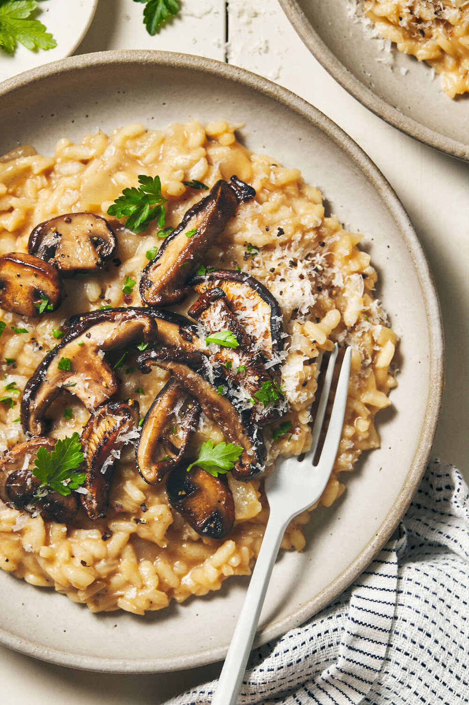

Mushroom Risotto

Ingredients:
3 small onions, finely chopped
1 clove of garlic, crushed
1 tsp minced fresh parsley
1.5 cups sliced fresh mushrooms
1 cup grated Parmesan cheese
Steps:
Heat olive oil in medium skillet over medium heat. Saute the onion and garlic until onion is tender and garlic is lightly browned. Remove garlic and stir in the parsley, celery, salt and pper. Cook until celery is tender and then add the mushrooms. Reduce heat to low and continue cooking until the mushrooms are soft.
Pour milk and cream into the skillet and stir in the rice. Reduce heat to a simmer. Stir the vegetable stock into the rice 1 cup at a time until it is absorbed.
When the rice is finished cooking, stir in the butter and Parmesan cheese and remove from heat. Serve hot.